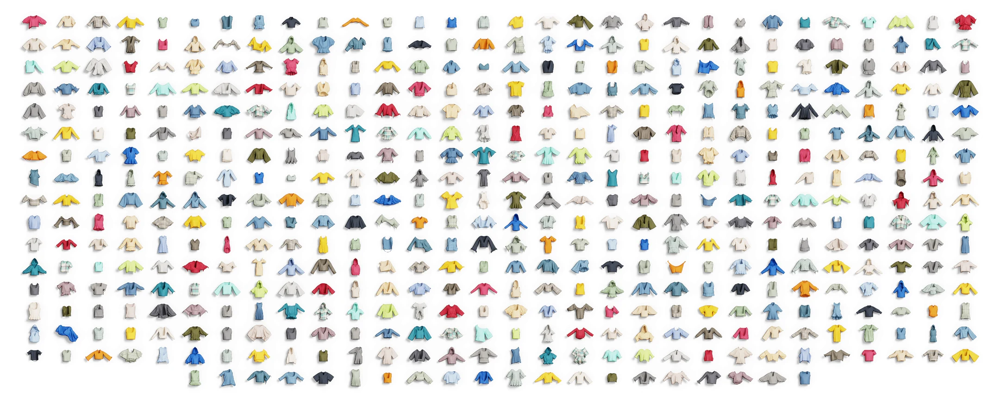

ClothDojo: Learned Data Generation and Benchmarking for Bimanual Garment Flattening and Folding
Complex manipulation. Reproducible evaluation.
500 garments.
Diverse shapes and topologies.

Re-rendered for learning.
7,848 RGB trajectories.
FlatteningFolding
One trajectory.
Multiple robot platforms.
Start with ClothDojo.
Python 3.11 · uv
git clone https://github.com/clothdojo/clothdojo.github.io.git ClothDojo
cd ClothDojo
bash scripts/download.sh flatten
bash scripts/setup.sh
source .venv/bin/activate
clothdojo generate --output outputs/first-flatten
clothdojo replay outputs/first-flatten/rollout01
Evaluate a policy ↗
Evaluate on the released garment panel.
02Render RGB observations ↗
Render saved motion with randomized appearances.
03Export RGB data ↗
Export rendered observations as training episodes.
Environment & resources
Use Linux x86_64, Python 3.11, Git, patch, uv, and an NVIDIA GPU with native BF16 support. NOCS generation and replay do not require Isaac Sim.
The quickstart downloads the required assets and flattening teacher. See the download guide for resources and the RGB rendering guide for the additional renderer dependencies and materials.